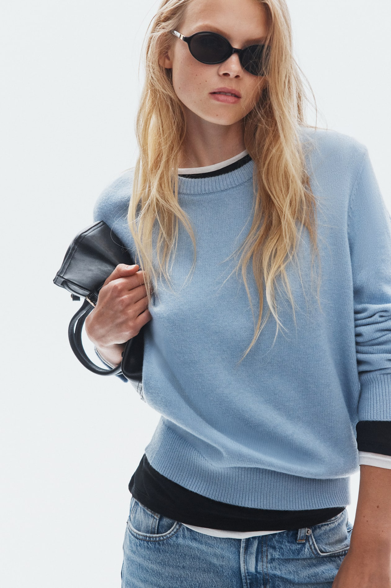
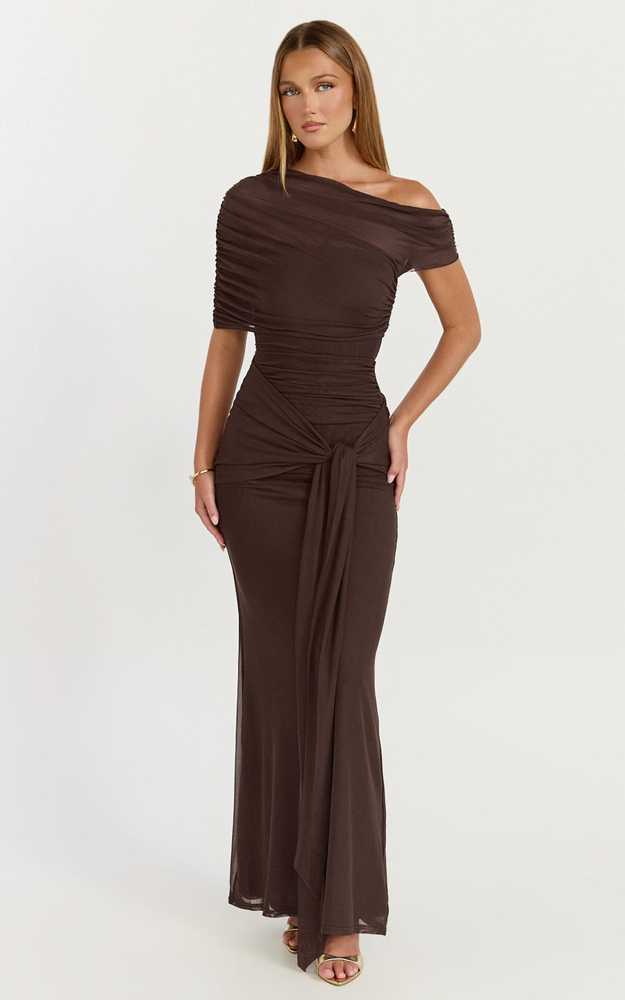

首批候选NO. 01
细针纽扣开衫
12.49美元17.99
日常叠穿、办公室空调房，一件可以配裤装和裙装。
把海外正在卖的女装，整理成一份好翻、好比较的选款册。看图片、认价格，再想一想：我们先从哪几款拿样？


实物参考图 · 逐款看资料
围绕通勤与日常拿样
先拿样 → 找买家 → 再补货
点击图片看大图和拿样提醒。点右上角的心形，把想一起讨论的款式记下来。
日常叠穿、办公室空调房，一件可以配裤装和裙装。
宽松轮廓方便内搭，可作为秋冬系列的外搭款。
修身基础款，适合单穿，也适合搭开衫和外套。
宽松日常轮廓，适合做休闲系列的主推上衣。
基础圆领短袖，适合与裤装组合展示。
翻领和五分袖带来较整齐的通勤感。
立领与灯笼袖有识别度，适合精品店做形象款。
侧面垂褶和不对称下摆，适合小量测试设计款。
通勤和日常都能搭，方便与针织上衣组合成系列。
九分裤长与锥形裤腿，给通勤买家另一种轮廓选择。
裤腿有弧度，比常规直筒更有造型感。
高腰宽腿是明确的日常轮廓，适合后续扩展裤装。
桶形裤腿加豹纹，适合用少量样品测试趋势接受度。
无袖外搭方便层次搭配，可作为秋冬补充款。
立领、宽松外套轮廓，适合秋冬层搭展示。
直身套头轮廓，方便搭配两种通勤裤。
方领、收腰与展开的裙摆，适合日常和聚会两种场景。
披肩式覆盖层让肩颈和上身更有层次，场景感明确。
抹胸与垂褶裙身，适合聚会、晚宴场景。
高领与胸前小镂空，适合年轻聚会客群。
挂脖系带与郁金香裙摆，适合度假和聚会。
挂脖与拼片收腰，适合偏正式的聚会场景。
抹胸配腰部系带，突出简洁的肩颈与腰线。
船领与网纱纹理，适合年轻聚会穿搭。
可以换个词，或者清除筛选后再慢慢挑。
先研究 01、03、04、09、10、16 号代表的版型方向，再寻找实际可供货的商品。它们能搭成一组日常通勤系列，方便向同一类店主展示。
围绕 6 个版型方向比较供应商，确认货源、出口销售与图片使用条件。找到实际供货款后，每款先拿 1—2 件，量尺寸、洗一次，再用自己的实拍图展示。
先向有进口经验的海外通勤休闲女装店展示。近期可验证冬季现货补单，同时准备 2027 年春季样品；用真实图片、尺寸和可兑现的交期沟通。
向供应商询问 20／50／100 件报价、每色每码最低数量及返单周期。先算清拿货、运输、税费和售后成本，拿到真实反馈后再增加库存，并根据买家需求调整衣长、领型或面料。
本册来自品牌商品页与畅销专区。每张卡片都保留原页入口，方便核对尺码、价格和更多图片。
价格核查日期为 2026-10-27。本页展示固定快照，不会自动更新；促销、颜色、尺码与结算条件可能影响最终价格。H&M 价格来自美国商品页及畅销专区，Showpo 价格来自澳大利亚站商品结构化报价。币种分别为 USD（美元）与 AUD（澳元），未换算人民币。
“首批候选”是基于拿样与试销便利性的建议；款式出现在本次查阅的品牌畅销专区，是需求线索，不能据此推断全球销量排名或保证成交。尚未核实国内同款供货、采购价格和补货能力。参考材质描述来自品牌商品页，实际采购样衣仍需独立核对。
图片来自 H&M 与 Showpo 对应商品页，仅用于展示参考版型并注明来源，版权归原权利人所有；本册不是这两个品牌的官方页面。备选记录保存在当前浏览器；主动点击分享时，会生成带有款式编号的清单链接。